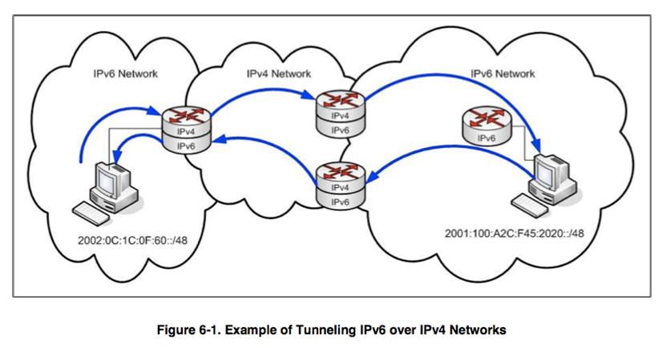
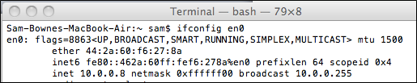
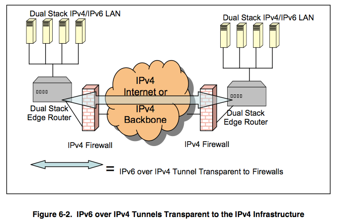
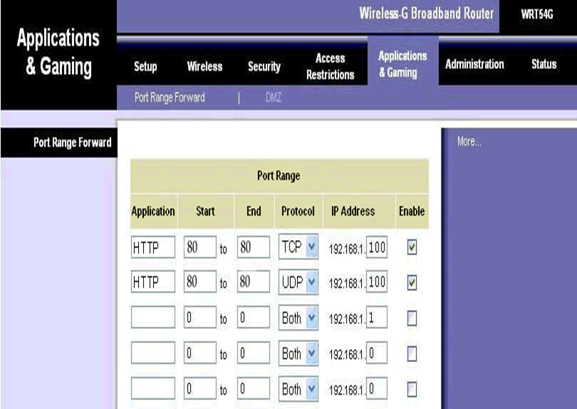
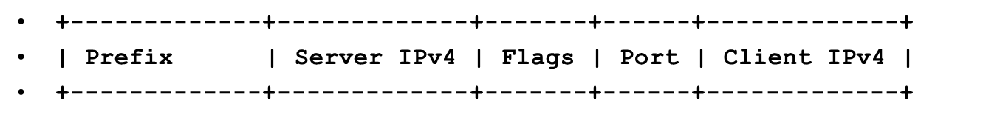

Ch 6: IPv6 Deployment
Sam Bowne
City College of San Francisco
Topics
- 6.3 Transition Mechnisms
- 6.4 Dual stac Ipv4/Ipv6 Environments
- 6.5 Tunneling
6.3 Transition Mechanisms
- IPv6 is not backwards-compatible with IPv4
- So while both protocols are in use, we need stransition mechanisms to connect them
- Three types of transition mechanisms
- Dual Stack
- Tunneling
- Translation
Early Stages
- Islands of IPv6 Connected via IPv4

Middle Stages
- Core is IPv6 or Dual-Stack
- Some tunnels are no longer needed
- Translation mechanisms will be needed to allow legacy IPv4 devices to access IPv6 services
Last Stage
- Most equipment and services are IPv6-only
- Only isolated islands of Ipv4 legacy services remain
- IPv4 tunnels over Ipv6
- Translation devices allow IPv6-oonly devicves to access IPv4 services
6.4 Dual Stack IPv4/IPv6 Environments

- Each host uses both IPv4 and IPv6
- Reduces need for tunnels
6.4.1 Deployment of a Dual Stack Environment
- Consider the following issues
- Shared infrastructure
- Must route and switche both IPv4 & IPv6
- Need for more resources
- Application protocol preference
Need for more resources
- Each protocol stack must share the available network bandwidth
- Routers need to:
- Maintain forwarding tables for both IPv4 and IPv6
- Run routing protocols for both protocols
- Implement packet filtering for both protocols
- Provide for congestion control for both protocols
- Handle special cases (IPv4 Router Alerts and IPv6 Hop-by-Hop Options) for both
- Forward packets for both protocols
- Hosts must devote resources to both protocol stacks ( for example, processing, memory, and network infrastructure traffic)
- Administrative and security staff must maintain concurrent environments as well
Applications in a Dual-Stack Environment
- Some applications are IPv4-only
- Some are IPv6-only
- Some are dual-stack
- DNS record order can be used to control preference for A or AAAA records on each resource
- IPv6 shoud be first when possible (preferred)
6.4.1 Addressing in a Dual Stack Environment
- If you use static addresses, you must provide both IPv4 and IPv6 addresses
- If you use DHCP, you msut provide both DHCPv4 and DHCPv6 server
6.4.3 Security Implications of a Dual Stack Environment
- Each dual-stack node is exposed to the vulnerabilitie sof both IPv4 and IPv6
- Security Details
- Consistent security policy for both Ipv4 & IPv6
- Account for new IPv6 functionality
- Mobility
- Stateless address autoconfiguration
- Neighbor discovery
- Privacy addresses
- End-to-end encryption with IPsec
Security Details (continued)
- Unexpected tunneling between hosts may violate security policies
- Organizations must upgrade
- Intrusion detection or intrusion prevention systems
- Firewalls
- Monitoring, logging, and auditing
- To provide IPv6 protection equivalent to what is available for IPv4
Security Details (continued)
- If utnneled packets are allowed to enter the network, the firewall or IDS/IPS system must be able to perform deep packets inspection.
- The performance of security systems may degrade when handling IPv6 (when using the same resources compared to IPv4)
Configured v. Automatic Tunnels
-
Configured tunnels
- Require system administrators to configure the endpoints of the tunnel
-
Automatic tunnels
- The nodes configured the endpoints themselves
Tunnels Bypassing Firewalls

Automatic Tunneling Mechanisms
- 6over4 — requires IPv4 multicast, rarely used
- 6to4 and 6rd — requires public IPv4 addresses, widely implemented
- ISATAP — does not work across NAT
- Teredo — UDP encapsulation intended for tunneling through IPv4 NATs
6.5.4 6over4 Protocol
- Old and simple
- Relies on IPv4 multicast
- Has not been widely deployed
- Hosts use their IPv4 address as an Interface ID
6over4 Example
- Network: 2001:5c0:1000:b::/64
- Gateway: 2001:5c0:1000:b::1
- Host Addresses:
- IPv4 (dotted-decimal):
192.168.1.101
- IPv4 (hex):
C0.a8.1.65
- Public IPv6:
2001:5C0:1000:b::C0A8:165
- Link-Local IPv6:
fe80::C0A8:165
6.5.5 6to4 and 6rd Protocols
- 6to4
- Allows IPv6 sites to coonnect to one another over an IPv4 network
- IPv4 address is embedded in IPv6 prefix
- Useful when your ISP does not offer an IPv6 prefix
6rd (Rapid Deployment)
- Allows IPv4 IPSs to offer Ipv6 to customers quickly and easily
- Uses the same system as to 6to4, but with the provider's IPv6 prefix
6.5.5 Using 6to4 and 6rd
- Each to 6to4 border router needs a public IPv4 address: w.x.y.z
- The IPv6 network conencted to that router uses the Ipv6 prefix 2002:w.x.y.z/48
- Example: CCSF uses: 147.144.0.1
- In hexadecimal: 93.90.0.1
- Our 6to4 IPv6 prefix is: 2002: 9390:1::/48
6to4 Relays
- Each 6to4 domain must have at least one relay router
- Relay outer has an an (IPv4) anycast address: 192.88.99.1
6.5.6 Intra-Site Automatic Tunnel Addressing Protocol (ISATAP)
- ISATAP allows isolated IPv6 hosts within a site running IPv4 to construct an automatic IPv6-in-IPv4 tunnel
- Does not use IPv4 multicast, as required with 6over4
- All hosts using ISATAP must be dual stack IPv4/IPv6
- ISATAP hosts communicate by tunnelign IPv6 packets over IPv4 using protocol 41
Protocol Numbers
- 6 — TCP
- 17 — UDP
- 41 — IPv6 (encapsulation)
Protocol 41 is Blocked by Most Home Routers

ISATAP Addresses
- A host with an IPv4 address w.x.y.z performs autoconfiguration with interface ID = ::0:5EFE:w.x.y.z
ISATAP Limitations
- All IPv6 hosts run dual stack IPv4/IPv6 with support for ISATAP
- Each ISATAP hosst must know at leaston dual stack IPv4/Ipv6 router
- All traffic is constrainted to a single administrative domain
- There is no need for IPv4 NAT traversal
6.5.7 Terado Protocol
- Tunneling IPv6 over UDP through Network Address Translations (NATs)
- Develoepd by Microsoft
- has a high overhead
- Detects NAT, then starts with a UDP packet sent from the NAT
- A teredo server listens to UDP port 3544
Teredo Addresses
- IPv6 addresses for Teredo clients are comprised of the following five parts:
- Prefix: the 32-bit Teredo service prefix 2001:0000::/32
- Server Ipv4: the 32-bit Ipv4 address of a Teredo server
- Flags: 16 bits set of 8000 for cone NATs and 0000 otehrwise
- Port: The Teredo client's 16-bit UDP port number, inverted bit by bit
- Client IPv4: The Taredo client's 32-bit IPv4 address (behind the NAT), inverted bit by bit
Figure 6-5. Teredo Address
